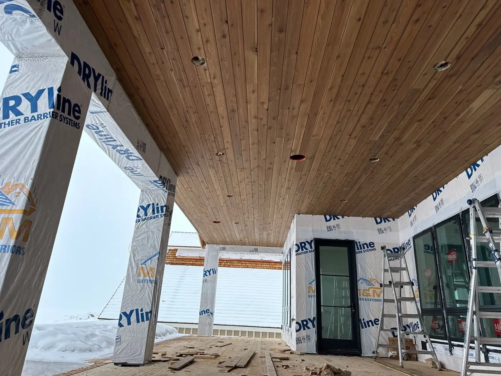

Utah has a unique climate with harsh winters and scorching summers. Finding the right type of siding for Utah homes is crucial to ensure your home stays safe from severe weather. To help you find the right option, we put together this list of the best siding for Utah.
What Is Siding, and Why Is It Important?
Siding is the exterior covering of a home. It’s your home’s first line of defense against harsh weather conditions like snow, wind, and sun rays. Siding also provides insulation, contributing to energy efficiency and comfort inside the home.
What Is the Best Siding for a House in Northern Utah?
Below is our list of the best exterior siding for a house in Utah. Learn more about the different siding materials for houses and find the perfect option for your home.
Fiber Cement
Fiber cement is made from cement, water, cellulose fibers, and sand. It’s a low-maintenance siding option that’s resistant to moisture and has a long lifespan. It typically costs between $5 and $14 per square foot.
Pros
● Durable
● Resistant to rot and pests
● Can mimic the appearance of several other siding materials
Cons
● Difficult to cut
● Heavier than some alternatives
Composite Wood
Composite wood is one of the best siding materials for a house if you want a cheaper, more durable alternative to wood. It has a similar appearance to wood but is resistant to moisture. It’s a cheaper siding option, with an average cost of $2.50 to $7.50 per square foot.
Pros
● Moisture-resistant
● Consistent, uniform appearance
● It’s often made from recycled materials
Cons
● Limited lifespan
● Noticeable seams

Vinyl
Vinyl may be the best siding for Utah homes because it can withstand Utah’s cold and occasionally wet climate. It’s non-porous and effectively prevents water absorption. The vinyl siding costs between $4 and $12 per square foot.
Pros
● Resistant to water-related damage
● Affordable
● Energy-efficient
Cons
● May warp in extreme heat
● Susceptible to UV damage
Brick or Stone
Brick and stone are popular types of siding in Utah for people who want a more natural look. Their durability and insulating properties create a barrier that protects homes against Utah’s harsh winters. Brick and stone typically have a higher price point, with brick costing around $14 to $30 per square foot and stone costing $35 to $50 per square foot.
Pros
● Can increase a home’s property value
● Provides sound insulation
● Fire resistant
Cons
● High cost
● Difficult to repair
Metal Siding
Metal is a great siding in Utah because it can resist cold weather and protect homes against wind, snow, and rain. It typically costs between $7 and $16 per square foot, depending on whether your metal panels are made from aluminum or steel.
Pros
● Keeps homes cooler by reflecting sunlight
● Resistant to termites
● Typically made from recycled materials
Cons
● Non-insulating
● It can produce a lot of noise during rainstorms
Manufactured Siding
Manufactured siding is crafted from various materials, including sand, cement, and synthetic materials. It looks similar to stone or brick but comes at a lower cost.
Pros
● Resistant to impact damage
● Easier to install than brick or stone
● Offers a consistent appearance
Cons
● Material layers may separate
● Color may fade over time
Siding to Avoid in Utah
While there are several types of siding best for Utah homes, there’s one you should avoid. Wood siding is porous and prone to moisture damage in cold climates like Utah. While it can offer a classic aesthetic, it’s not suitable for Utah’s harsh winters.
Pros
● Natural aesthetic
● Easy to customize
Cons
● Vulnerable to weather damage
● It may attract insects like termites
● Unsafe in areas prone to wildfires
How to Choose Between Siding Options
When looking for the best siding for your Utah home, there are some factors to consider. These include
● Cost. Consider initial costs and long-term expenses.
● Durability. Make sure your siding will provide long-lasting protection.
● Aesthetics. Determine your aesthetic preferences.
● Weather. Choose siding that is best for Utah’s changing weather conditions.
● Maintenance. Some siding requires regular maintenance, like painting or staining. Choose one that’s easy for you to maintain.
Different Grades of Siding Provided by M&M Gutters & Exteriors
Are you wondering how long siding lasts in Utah? Ultimately, it depends on the type of siding you choose and the company you hire to install it. At M&M Gutters and Exteriors, we offer several high-quality siding grades that are meant to protect your home for many years. These include:
● Prodigy
● Charter Oak
● Odyssey
● Conquest
● Board & Batten
● Ovation
● Carved wood
● Quest
● Board+Batten Designer Series
Our Related Blogs
Check out these blogs to learn about rain gutters and ice-melting systems for your roof!
What Is the Average Cost of Rain Gutters?
How Long Do Rain Gutters Last?
How Does an Ice Melting System Work?
Contact M&M Gutters today to find the best siding for your Utah home. We’ll provide a free quote and expert advice on choosing a suitable siding material for your house.